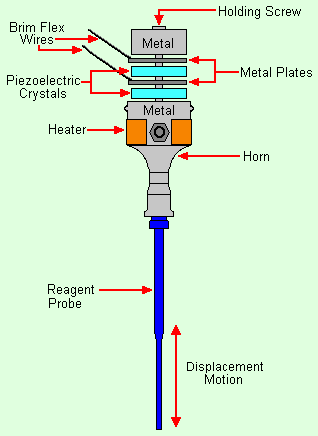
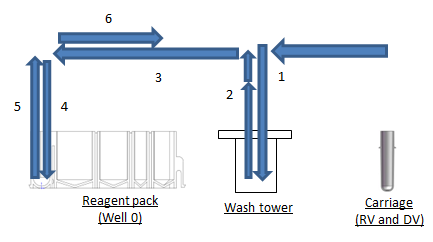

Ultrasonics
This topic includes information about the operating principles for the ultrasonics.
| Table of Contents |
|---|
| Function |
| Transducer Reference Illustration |
| Differences from DxI 800/600 |
| Component Description |
| Pack Mixing Concepts |
Function
Ultrasonics are used to perform several functions critical to the processing of assays:
- Mix particles in reagent packs and reaction vessels.
- Mix fluid in reaction and dilution vessels.
- Aid in washing the reagent probe.
- Dry the reagent probe using sonication.
Transducer Reference Illustration

Differences from DxI 800/600
- Added thermistor to transducer heater to improve thermal control.
- Removed the level sensing mechanism and replaced it with a process monitoring system (pressure sensor).
Component Description
| Term | Function / Description |
|---|---|
| Displacement, Tip |
|
| Mixing, Fluid |
|
| Mixing, Particle |
|
| Power Levels |
|
| Resonant Frequency |
|
| Wash and Dry, Probe |
|
| Ultrasonic Heater (Temperature Control of Ultrasonic Transducer) |
|
Pack Mixing Concepts
The steps for the pack mixing without pipetting process:

| Step | Description |
|---|---|
| 1 |
|
| 2 |
|
| 3 |
|
| 4 |
|
| 5 |
|
| 6 |
|